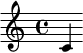

我如何用 Sphinx 建立笔记系统（一）选择 Sphinx 的理由¶
注解
这是《我如何用 Sphinx 建立笔记系统》系列的第 一 篇。
👤SilverRainZ（指我自己）在使用一个还未存在的自建笔记系统，每次想写点东西都因为「无法解决依赖」而失败。 1
不知何时我养成了一种奇怪的癖好，想读一本有价值的书，没有合适工具记读书笔记，所以不读。 想记录一些不成体系的知识，不知道如何组织分类这些碎片，所以不记。想写一篇博客，文章里有一些交叉引用，不想用粗暴的 <a href=xxx> ，所以不写。
因噎废食大概就是这样吧。
漫长的选型¶
我并非没有在找合适的记录工具，大学时用 OneNote，在我还热衷于成为一个黑客的时候，我用 OneNotes 记下了几十篇 OllyDBG 的学习笔记。那时候云同步功能还不够好，在一次误操作中丢失了部分笔记，从此成为软黑。
后来 GitBook 流行起来，尝试用其管理笔记，缺点有三：
太慢了
Markdown 表达力太孱弱，索引靠手写，引用靠 HTML 链接
打包非常恶心：我曾在 AUR 维护过 📦nodejs-gitbook，gitbook 提供了一个只许全局安装（Root 下而非 Home 下）的 gitbook-cli 作为安装器，而不允许用户单独安装 gitbook 本身：这让发行版的打包非常困难。
2017 年我开始用 Sphinx 管理我的笔记 ，reStructuredText 已经很接近我心中理想的 markup language 的样子，结果刚建起一个框架便开始荒废。从那时到现在已经过去了四年，我记录下了些什么呢？——什么都没有
2020 年，3、4 月的时候我尝试用 Golang 从零开始写一个笔记软件，后来发现无论是设计和工作量都不是我单枪匹马能胜任的，最后只留下只有零星几个 commit 的仓库。
5 月，我建立了 ⛺SilverRainZ/bullet 仓库准备再试试 Sphinx，之后学画需要记 大量的笔记，将他们电子化也是一个强大的驱动力。
9 月的时候生病，居然也因祸得福，捡到了几个月的疗养时间。在家的时候里我好好学习了一下 Sphinx 和 Docutils，思考各种类型的文档要如何组织，尝试使用社区提供的 各种扩展 来增强文档的功能，再后来发现自己的需求社区并不能满足，便自己建立了一个一人社区 👥sphinx-notes。
2021 年，在陆续完善一些关键的 `Sphinx 扩展`_ 之后，我的笔记系统 发出了响亮的第一声啼哭 开始慢慢形成了。
我的需求¶
在漫长的寻找中我慢慢明确了自己的需求，以及自己心目中的笔记系统是什么样子的。在提出需求之前，先来看看我的场景：
场景¶
我希望 笔记被良好分类且结构合理 ，对目录（Table Of Content）、交叉引用（Cross Reference）有大量需求
我希望能 结构化地描述笔记中的对象 ，并对它们进行引用、索引和分类，听起来有些强迫症但并非空穴来风：
我经常画画，我用笔记来记录自己的 绘画训练计划 ，其中包含大量的作品，我用统计的方式记录他们的日期、尺幅、媒介，例如：Artwork Medium Reference Index
我在学艺术史，以艺术家为脉络的话，我可以建立这样的索引：Artist Reference Index
我的 朋友们 经常会出现在我的行文中，我想漂亮地 mention 到 TA，比如
👤quininer，其实也是避免冗余的一个方式
我是 Linux 用户（Arch Linux B.T.W），我在终端下工作，当然网页是现在最通用的界面了：我需要我的笔记能在网页端和终端都能被良好地检索和浏览
我偏爱纯文本，作为曾经的 Mircosoft Word 的用户，我不喜欢复杂的富文本带来的难以预测的排版问题，以及兼容问题
我乐于折腾配置，我有一定的编程经验：我清楚自己的需求特殊，愿意为此折腾，包括写一些代码
选型¶
我将上面的场景尽量转化为一些指标用于选型：
- 使用纯文本
就编辑体验的一环来说，富文本往往绑定一个复杂的，羸弱（想想论坛编辑器）或者 难以预料的（想想 MS Word）的编辑器，这当然不能怪他们，富文本编辑真是是太难了
纯文本给我一种踏实感：
不会产生冗余代码 – 你写什么它就是什么
不限制编辑器 – 我可以继续用 (Neo)Vim
注解
其实不一定，看看 VimWiki、Org-mode
容易自动化地修改
- 表达能力及格
笔记系统所使用的表达方式（Markup language、富文本）要有足够强的表达能力，对于书写中的常用格式（链接，引用，代码块、脚注、表格、提示、图片）都要有足够支持。
注解
为什么不是「表达能力强」呢？
强实际上意味着集成度高，也意味着 Domain Specified，所有原生的 Markup language 都难以做到方方面面让人满意，笔记写多了总有自己的特殊需求，富文本里能打的可能只有也 OneNote 一个 —— 但我是不可能用的。
因此，够用就行—— 通过扩展让它变强。
- 标准可扩展
我希望我的笔记系统的表达能力的可以根据我的需要扩展的。 在前面的指标里为什么我不要求「表达能力强」呢？
强实际上意味着集成度高，和后面某一条指标相悖
强也意味着 Domain Specified，乎所有原生的 Markup language 都难以做到方方面面让人满意，笔记写多了总有自己的特殊需求，富文本里能打的可能只有也 OneNote 一个 —— 但我是不可能用的
因此，够用就行—— 通过扩展让它变强，我希望这个系统原生地提供一个给我扩展的能力的借口。
我不喜欢所有使用 Markdown 方言的笔记软件，这是不「标准」的扩展方式。
- 自由开源
我不信任商业软件、共享软件：软件项目会倒闭，会改变定价，会做 breaking change，会停止维护——当然自由软件也会，只是你与社区并非无能为力
- 组件化
我希望我的系统最终是由多个组件组合而成的，组件化意味着 复杂度被分摊到了不同的组件上 ，在未来某一个项目跑路的时候，我只需要寻找它那一部分的替代品就好了。
- 目的单纯
承上，在系统里负责解释和渲染笔记的核心组件几乎是不可替代的，那么我希望那个它是目的是单纯且稳定的。如果它还多做了很多事情。比如说发布系统、帐号体系、权限控制，甚至 APP 等，又或者它是某个庞大项目的附庸，那么我也倾向于不使用它。
历史选择了 Sphinx¶
其实上面写一堆有些 📖先射箭再画靶 的意思了，如题，最终我选择了 reStructuredText + Sphinx 作为笔记系统的核心。
现在介绍会不会太晚？
is an easy-to-read, what-you-see-is-what-you-get plaintext markup syntax and parser system. … reStructuredText is designed for extensibility for specific application domains. 2
Sphinx is a tool that makes it easy to create intelligent and beautiful documentation, written by Georg Brandl and licensed under the BSD license. It was originally created for the Python documentation, and it has excellent facilities for the documentation of software projects in a range of languages. 3
针对上面的指标，reStructuredText（下称 reSt） + Sphinx 具有哪些优势呢？
reST 虽然稍显繁琐，但其表达能力非常优秀
reST 在语法上提供了灵活的扩展方式
Sphinx 作为 Python 官方的文档生产系统，久经考验，同时也被大量著名非 Python项目（Blender、DPDK、Linux Kernel）采用
Sphinx 提供了
.. toctree::指令，能将文档以树状的形式组织起来Sphinx 支持丰富的交叉引用功能
Sphinx 提供了 Domain 机制，为后续的 描述、引用和索引 提供了基础实现
Sphinx 在 reST 的基础上实现了有优秀的扩展机制，同时有 大量的现成的扩展 可用
除此之外，单纯靠 Sphinx 无法达到的指标，我用扩展 + 其他组件搞定，请继续往下。
系统架构¶
目前，我的笔记系统的架构是这样的（使用 📦sphinxcontrib-plantuml 生成）：
![file "HTML 文档" as html
package "Sphinx" as sphinx {
component "Snippet 插件" as snippet.ext
}
sphinx -u-> html: 输出
folder "Git 仓库" {
file "Sphinx 配置"
file "reStructuredText 文档" as rst
}
rst -u-> sphinx: 构建
cloud pages.github as "Github Pages（主站）"
cloud pages.gitee as "Gittee Pages（镜像）"
html -u-> pages.github: git push
pages.github -> pages.gitee: Github Action
file "Snippet 索引" as snippet.cache
agent "Snippet 命令行工具" as snippet.cli
snippet.cli .u.> snippet.cache: 读取
snippet.ext .d.> snippet.cache: 写入
snippet.cli -u-> html: 浏览
snippet.cli -u-> rst: 浏览，编辑
node shell as "Z Shell"
node editor as "Neo(vim)"
shell -u-> snippet.cli: 浏览，编辑
editor -u-> snippet.cli: 浏览，编辑](../_images/plantuml-a9f385a4c905bb846652df7c0b3ce816a60e5423.png)
Bullet 笔记系统架构¶
Git¶
如图，我用 Git 来管理整个 Sphinx 项目的版本，用 GitLFS 管理图片资源（后来因为 gitee 不支持又去掉了），仓库沿用之前建立的 ⛺SilverRainZ/bullet 上。
一般来说 Sphinx 文档都会托管到 ReadTheDocs，出于部署速度的访问速度的要求，我基于 GitHub Action 写了 ⛺sphinxnotes/pages 用来自动部署 Sphinx 文档到 GitHub Pages，并使用 ⛺spyoungtech/mirror-action 和 ⛺yanglbme/gitee-pages-action 建立了国内的 Gitee 镜像。
小技巧
Github 和其他托管平台会在 Languages 统计时忽略常见的 Markup Languages（如 Markdown、restructuredText），为了让它能被统计 ，可以建立 .gitattributes 文件加入以下内容 4
*.rst linguist-detectable=true
在 GitHub 上可以看到 reStructuredText 被正确统计了：

Neo(Vim)¶
我用 Neovim 编辑 reST 文件，关于如何在舒服地用 (Neo)vim 写 reST，我会再写一篇文章展开。
从终端和 Vim 快速访问¶
浏览器、Vim 和终端模拟器是我最常待的 workspace，前者当然可以方便的访问 Sphinx 生产的 HTML 文档，为了从后两者操作文档的需求，我写了 📦sphinxnotes-snippet ，包含一个 Sphinx 扩展和一个命令行工具。
- Snippet 扩展
会在构建文档的时候：
自动提取文档片段：标题、代码、图片、段落等
中英文分词
简单地 normalize
提取关键字
中文转化为拼音
建立到文档的索引
然后保存在磁盘上待检索。
- Snippet 命令行工具
本身提供了简介强大命令行接口用以访问上述的索引，基于此在 Zsh 和 Neovim 实现了对应的插件：
按下快捷键 C-k，后续一个按键给出操作方式： v 浏览、e 编辑、u 打开 URL
在 Fzf 中输入关键词以筛选文档片段，支持拼音
对你选中的文档片段执行指定操作
在这之前我「检索外脑」的延迟为 数十秒 ，根据所在 workspace的不同有不同的操作：
- 在浏览器
打开主站或者 Gitee 镜像
根据记忆中的笔记结构一层层点进去
使用 Sphinx 的内建搜索
注解
事实上 Sphinx 内建的搜索不支持中文分词，因此实用程度基本为零
- 在 Vim
根据记忆中的笔记结构，打开 NERDTree 的侧边栏一层层展开
- 在终端
cd到笔记所在目录执行grep -r 关键字，然而笔记中文内容居多（一段时间内我甚至在考虑要不要用英文记笔记方便检索）根据记忆中的笔记结构一层层
cd进去，用 Vim 浏览
在使用 Snippet 后这一过程可以压缩到一秒内：
- 在浏览器
切换到 Vim 或者终端
- 在 Vim
唤醒 Snippet，输入关键词，
- 在终端
唤醒 Snippet，输入关键词，
这一时间的压缩让检索的实用性大大提升：检索一些总记不住的命令已经比开 Google 快了 此外，编写编辑的时候，在不同笔记之间的跳转也流畅许多。
关于 Snippet 的使用，我也会再写一篇文章展开，配合其他工具有非常多的玩法。
描述、引用和索引¶
除了上述的 Snippet，另一个非常实用的扩展是 📦sphinxnotes-any
博客¶
博客是最难办的一件事情，单纯靠安排笔记的接口可以让它看起来像一个博客，但关键的 目录、标签、归档、评论功能统统都没有。好在这件事情已经有人做了，并且做得非常舒服，非常符合 Sphinx 的哲学：
- ghorg:sunpy
社区写了一个叫 📦ablog 的扩展，用来在 Sphinx 里建立博客，保持兼容最新版的 Sphinx 为目标，开发也非常活跃。你可以看看 ABlog 在我的笔记系统上的效果：Posts
ABlog 支持 Disqus 评论，如果你想用 Self-hosted 的 Isso 的话，可以试试我写的 📦sphinxnotes-isso，文章底部可以看到 Isso 的评论框。
值得一提的是，Sphinx 的 sidebar 并不是全局的，可以用 glob pattern 让不同的页面用不同的，因此可以让 ABlog 引入的博客侧边栏不会影响现有的其他的文档：
standard_page = ['about.html', 'localtoc.html', 'searchbox.html']
blog_post_page = ['about.html', 'postcard.html', 'localtoc.html',
'recentposts.html', 'tagcloud.html', 'categories.html',
'archives.html', 'searchbox.html']
html_sidebars = {
'blog': blog_post_page, # ABlog's "All Posts" page
'blog/**': blog_post_page, # Inlucde posts and autogenerated pages
}
两种 sidebar 对比如图：

左：默认 sidebar，右：博客 sidebar¶
注解
比较遗憾的是，之前使用的 sphinx_rtd_theme 并不听 Sphinx 的 sidebar 配置 只能换成了默认的 Alabaster theme
SphinxNotes 还有什么？¶
用 LilyPond + 📦sphinx-notes-lilypond 来显示音符  和 带试听音频的乐谱
📦sphinxnotes-strike 提供了
delrole 用来显示 reST 不支持的 删除线
其他扩展¶
用
sphinx.ext.extlink来方便地生成外部链接用
sphinx.ext.graphviz和 📦sphinxcontrib-plantuml 来各种图表用 ⛺executablebooks/sphinx-panels 提供 reST 不支持的分栏功能，顺便还享用了它内置的 Font Awesome 支持
待处理
see conf.py
脚注